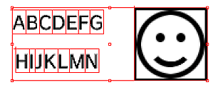
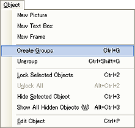
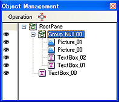
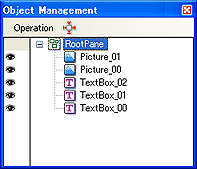
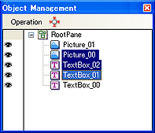
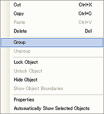
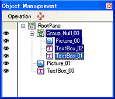

オブジェクト同士をグループ化できます。
グループにまとめたオブジェクトは同時選択、同時移動の他に、テキストのピクチャオブジェクトへの回り込み機能などが使えます。
グループにしたいオブジェクトを同時に選択します。

オブジェクトを選択した状態で、メインメニューの[オブジェクト]→[グループ作成]でグループを作成できます。

オブジェクト管理ウィンドウで、1つのグループとしてまとめられた事を確認できます。

グループを選択してメニュー内のグループ解除を選択すると、グループを解除できます。
メインメニューの[ウィンドウ]→[グループ]で、オブジェクト管理ウィンドウを表示します。
オブジェクト管理ウィンドウでは、ページ中のオブジェの状態を一覧することが可能です。

オブジェクト管理ウィンドウ内で、グループにしたい複数のオブジェクトを選択します。
[shift]＋[左クリック]、もしくは、[ctrl]＋[左クリック]で、複数選択できます。

オブジェクトを選択した状態で、[マウスの右クリックメニュー]→[グループ作成]で、グループを作成できます。

オブジェクト管理ウィンドウで、1つのグループとしてまとめられた事を確認できます。

グループを選択し、[マウスの右クリックメニュー]→[グループ解除]でグループを解除できます。